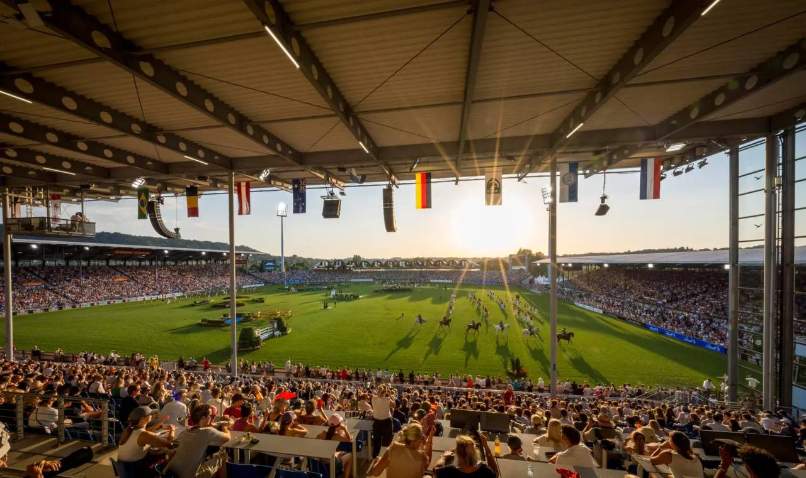

España inscribe quince jinetes en la lista nominativa para los Juegos Mundiales de Aachen
La RFHE ha presentado ante la FEI la relación de jinetes con opciones de formar el equipo de salto que acudirá a los Juegos Ecuestres Mundiales el próximo mes. La lista definitiva, aún abierta, se cerrará el 27 de julio.

Cesión editorial (Telegram)
La Real Federación Hípica Española ha inscrito ante la FEI la lista nominativa de la disciplina de salto de obstáculos para los Juegos Ecuestres Mundiales de Aachen 2026, que se disputarán el próximo mes. La relación incluye quince jinetes con opciones de formar parte del equipo español: Julio Arias, Carlos Bosch, Pilar Cordón (con dos caballos), Manuel Fernández Saro, Jesús Garmendia, Álvaro González de Zárate, Francisco Goyoaga, Carlos López-Fanjul, Alberto Márquez Galobardes, Sira Martínez, Imma Roquet, Laura Roquet, Iván Serrano y Armando Trapote.
La FEI mantendrá la lista abierta hasta el 27 de julio, fecha límite para el cierre definitivo de las inscripciones. Mientras otros países ya están comunicando sus equipos definitivos, España previsiblemente no anunciará su selección final hasta después del CSI4* A Coruña, que se disputa esta semana.
— Redacción de Hípica al Día